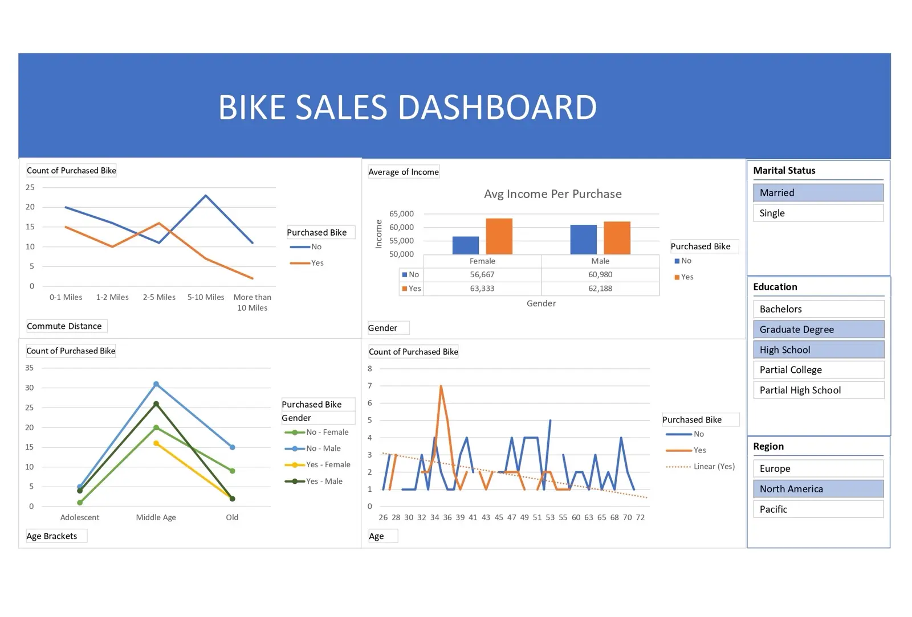

Compare buyers and non-buyers
Charts preserve the distinction between purchase outcomes across demographic dimensions.
Dashboard / Excel
The patterns behind
a purchase.

An Excel dashboard exploring bike purchases across demographic groups, income, commute distance, and regional filters.
Sales totals alone do not explain which groups purchase bikes or how commuting and income relate to demand.
The workbook puts purchase comparisons in one place, with views for commute distance, average income, age brackets, and individual ages. Slicers narrow the view by marital status, education, and region.
Charts preserve the distinction between purchase outcomes across demographic dimensions.
Commute distance and average income sit beside age-based comparisons.
Regional, education, and marital-status slicers support a narrower reading of the workbook.
The GitHub README publishes both a dashboard preview and the Excel workbook, making the analysis available for further exploration.
The useful unit is a comparison: a dashboard becomes more informative when a visitor can compare purchase behavior within a specific segment.